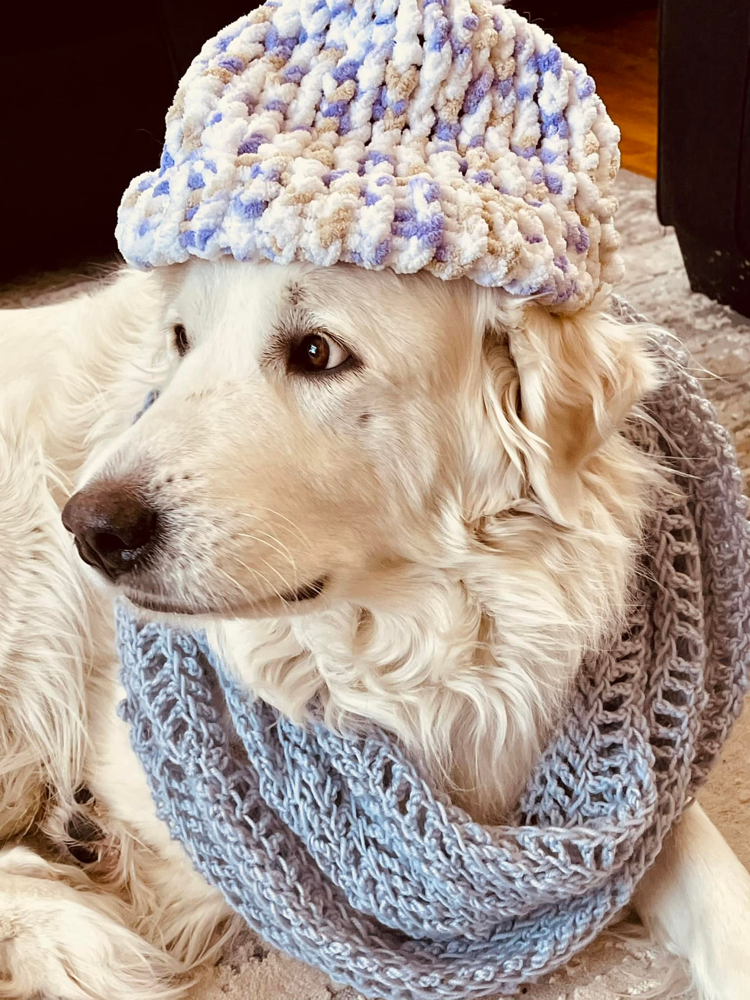
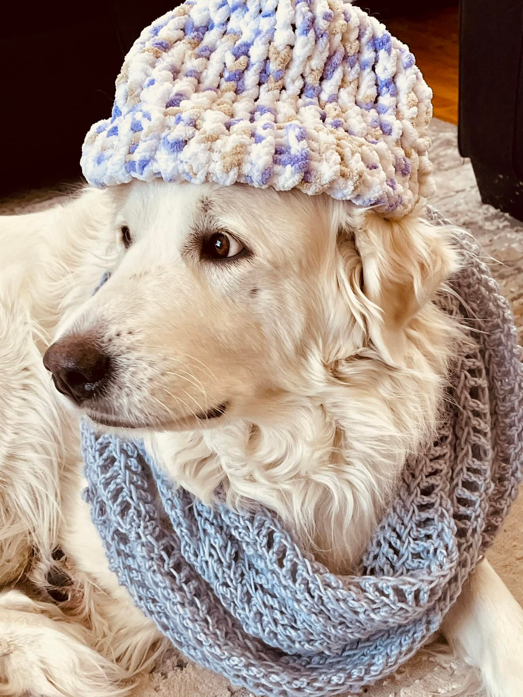

Family
Here are some pictures of my family and my dog daisy who is a great pyreness



I was born and raised in Dallas, Texas. I come from a family of 8; my mother, father and 5 siblings. I have an older sister, 2 younger brothers, and 2 younger sisters, making 6 of us total. I am 22 years old and attending school at Brigham Young University right now. Go Cougs! I currently work part-time as a Legal Assistant at AlvaradoTsosieLaw, PLLC, and I am grateful for the chance I have to make a difference in people's lives.
I have been at school for about 2 years now, and served a 2 year mission. I had the wonderful opportunity to share the gospel in the Arizona Tucson Mission. I loved my time serving there, and I am grateful for the many experiences I was able to gain from it. I plan on majoring in Information Systems.
Music is something that I am very passsionate about. Not only listening to music, but also playing and performing music. I have played the piano for about 10 years now, and it has brought me peace and comfort many times throughout my life. I have had the opportunity to learn discipline and growth from daily practice and perserverance. One of my favorite pieces I have played is called "Piana" by Hugo Sellerberg.
Music is something that I am very passsionate about. Not only listening to music, but also playing and performing music. I have played the piano for about 10 years now, and it has brought me peace and comfort many times throughout my life. I have had the opportunity to learn discipline and growth from daily practice and perserverance. One of my favorite pieces I have played is called "Piana" by Hugo Sellerberg.
I have always found joy in being able to have my imagination run free. Reading is one of those ways I am able to excercise my mind, and find joy. I found a love for reading in elementary as I began to read about heroic and adventurous stories. One of the first books I remember reading was the Percy Jackson series. I fell in love with the heros and it felt like I was there in person, experiencing all of the emotions and thrills. My favorite book series would have to be the Lorien Legacies, known commonly as "I am Number Four".
